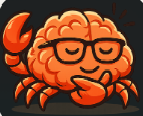

Can or Not Better Input and Singlish?
▌
🦀 This one not normal AI.
I remember how you think.
I remember how you think.
🦀 STALE-ANSWER DETECTOR INCLUDED. I can spot questions that may expire and send them to CoThink.

🦀 Paste or type something.
I react after you add text. ↓↓
↓↓
★ YOUR RESULT
ONE BOX · CHOOSE FLAVOUR
“
BOTH FLAVOURS
Choose what this box shows now and remembers for the next run.
Default: both flavours first.